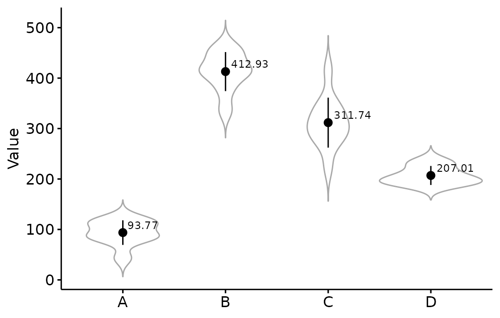
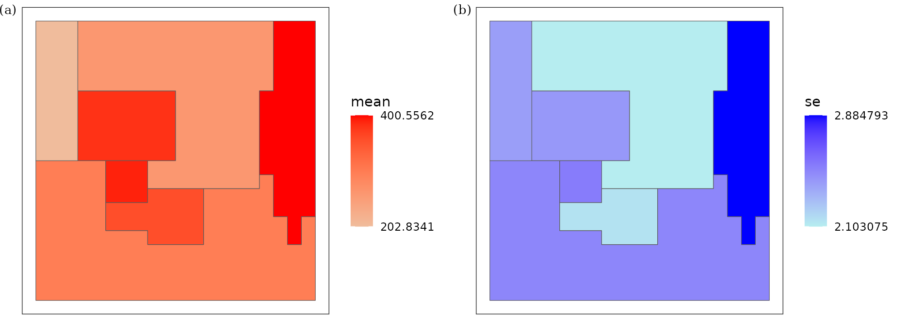

Spatial prediction based on spatial stratified heterogeneity
Wenbo Lv
Source:vignettes/sandwich.Rmd
sandwich.RmdThis vignette explains how to do spatial prediction use
Sandwich Mapping Model in spEcula package.
Conceptual model of the Sandwich mapping model
Load package and data
library(sf)
library(tidyverse)
library(spEcula)
simpath = system.file("extdata", "sim.gpkg", package="spEcula")
sampling = read_sf(simpath,layer = 'sim_sampling')
ssh = read_sf(simpath,layer = 'sim_ssh')
reporting = read_sf(simpath,layer = 'sim_reporting')
- A simulated data set that contains a 20 × 20 grid. The grid is divided into four strata (denoted by thick gray outlines), and a random sample of 41 units is drawn (as denoted by the dots). (b) Seven reporting units whose values are to be inferred. Gray units do not have sampling units falling in.
visualize the mean and standard deviation of the sample in each stratum
sampling_zone = sampling %>%
st_join(ssh['X']) %>%
st_drop_geometry()
library(ggpubr)
ggerrorplot(sampling_zone, x = "X", y = "Value",
desc_stat = "mean_sd", color = "black",
add = "violin", add.params = list(color = "darkgray")) +
geom_text(data = summarise(sampling_zone,vmean = mean(Value),.by = X),
aes(x = X, y = vmean, label = round(vmean,2)),
vjust = -0.5, hjust = -0.15, color = "black",size = 3) +
scale_x_discrete(labels = LETTERS[1:4]) +
theme(axis.title.x = element_blank())
Run sandwich model for the sim data use area
weight
sim_est = sandwich(sampling = sampling,stratification = ssh,reporting = reporting,
sampling_attr = 'Value',ssh_zone = 'X',reporting_id = 'Y',
weight_type = 'area')
sim_est
## Simple feature collection with 7 features and 3 fields
## Geometry type: POLYGON
## Dimension: XY
## Bounding box: xmin: 5.684342e-14 ymin: 2 xmax: 4 ymax: 6
## Geodetic CRS: WGS 84
## # A tibble: 7 × 4
## Y sandwichest_mean sandwichest_standarderror geometry
## <dbl> <dbl> <dbl> <POLYGON [°]>
## 1 1 381. 2.43 ((0.8 4, 0.8 4, 1 4, 1.2 4, …
## 2 2 262. 2.10 ((2.8 6, 2.6 6, 2.4 6, 2.2 6…
## 3 3 298. 2.49 ((2.4 3, 2.4 2.8, 2.2 2.8, 2…
## 4 4 401. 2.88 ((4 3.6, 4 3.8, 4 4, 4 4.2, …
## 5 5 390. 2.53 ((1 3.6, 1 3.4, 1.2 3.4, 1.4…
## 6 6 357. 2.15 ((1.6 3, 1.6 2.8, 1.8 2.8, 2…
## 7 7 203. 2.40 ((0.6 5, 0.6 5, 0.6 5.2, 0.6…see the estimated mean (a) and its standard error (b) returned by the Sandwich mapping model for each of the seven reporting units.
library(cowplot)
f1 = ggplot(data = sim_est, aes(fill = sandwichest_mean),
color = "darkgray") +
geom_sf() +
labs(fill='mean') +
scale_fill_gradient(low = "#f0bc9c", high = "red",
breaks = range(sim_est$sandwichest_mean)) +
theme_bw() +
theme(
axis.text = element_blank(),
axis.ticks = element_blank(),
axis.title = element_blank(),
panel.grid = element_blank(),
legend.position = 'right',
legend.background = element_rect(fill = 'transparent',color = NA)
)
f2 = ggplot(data = sim_est, aes(fill = sandwichest_standarderror),
color = "darkgray") +
geom_sf() +
labs(fill='se') +
scale_fill_gradient(low = "#b6edf0", high = "blue",
breaks = range(sim_est$sandwichest_standarderror)) +
theme_bw() +
theme(
axis.text = element_blank(),
axis.ticks = element_blank(),
axis.title = element_blank(),
panel.grid = element_blank(),
legend.position = 'right',
legend.background = element_rect(fill = 'transparent',color = NA)
)
plot_grid(f1, f2, nrow = 1,label_fontfamily = 'serif',
labels = paste0('(',letters[1:4],')'),
label_fontface = 'plain',label_size = 10,
hjust = -1,align = 'hv') -> p
p
Run sandwich model for the sim data use population
weight
sandwich(sampling = sampling,stratification = ssh,reporting = reporting,
sampling_attr = 'Value',ssh_zone = 'X',reporting_id = 'Y',
weight_type = 'population')
## Simple feature collection with 7 features and 3 fields
## Geometry type: POLYGON
## Dimension: XY
## Bounding box: xmin: 5.684342e-14 ymin: 2 xmax: 4 ymax: 6
## Geodetic CRS: WGS 84
## # A tibble: 7 × 4
## Y sandwichest_mean sandwichest_standarderror geometry
## <dbl> <dbl> <dbl> <POLYGON [°]>
## 1 1 NaN NaN ((0.8 4, 0.8 4, 1 4, 1.2 4, …
## 2 2 266. 2.11 ((2.8 6, 2.6 6, 2.4 6, 2.2 6…
## 3 3 311. 2.42 ((2.4 3, 2.4 2.8, 2.2 2.8, 2…
## 4 4 413. 3.06 ((4 3.6, 4 3.8, 4 4, 4 4.2, …
## 5 5 NaN NaN ((1 3.6, 1 3.4, 1.2 3.4, 1.4…
## 6 6 NaN NaN ((1.6 3, 1.6 2.8, 1.8 2.8, 2…
## 7 7 93.8 2.85 ((0.6 5, 0.6 5, 0.6 5.2, 0.6…Remember to use population weighting when the sample
size is large enough, otherwise use area weighting.